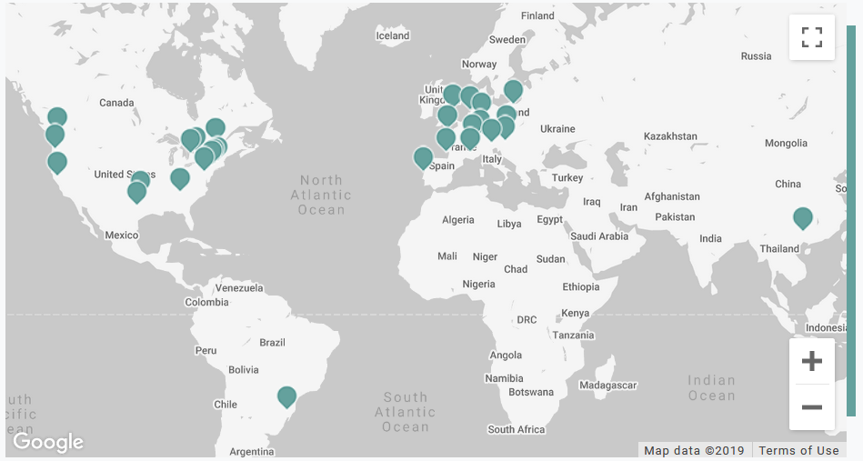

name: inverse layout: true class: center, middle, inverse --- #Brainhack 2019 ##Introduction --- layout: false #Special Thanks Spatial thanks go to [Peer Herholz](https://github.com/PeerHerholz/) , who first introduced the material and shared it. Most of this stuff you will see is based on his prior work. --- .left-column[ ## What is Brainhack? ] .right-column[ Researchers from across the globe and a myriad of disciplines working together on innovative projects related to neuroscience. - Brainhack Marburg is part of the Brainhack Global. - Working around the world - Marburg is the only Brainhack in Germany this year  ] --- .left-column[ ## What is Brainhack? ## Objectives ] .right-column[ #### Gain Skills - using python for diverse neuroscientific analyses - Empower you with tools and technologies to do reproducible, scalable, and efficient research #### Get Involved - Familiarize you with the Python ecosystem for scientific work - Become an active part of a fun & fast growing movement #### Be Social - Interact with each other, help each other and learn from each other - Get to know other participants and their projects #### Share - Bring everything you've learnend to your home institution ] --- .left-column[ ## What is Brainhack? ## Objectives ## Your Role ] .right-column[ - **Interrupt and ask questions** - Use the google doc [here](https://docs.google.com/document/d/1-Sex9YU0SZDg4sIhFsNN07EpjwtHGQaS32nsq1-O-nI/edit?usp=sharing) to interact with us and other participants. Ask questions, help others and give feedback. - The google doc is also a great way to take and share notes - Help each other out - Tell us about cool things that you are working on or you are aware of - Talk to everyone - Give us feedback and help improve the lectures ] --- .left-column[ ## What is Brainhack? ## Objectives ## Your Role ] .right-column[ **Be aware of 3 important points:** - this is a 3 day brainhack, intended to show you the absolute basics of an unbelievably broad ecosystem and it's possibilities: - a lot of the thinks will be completly new and/or different from what you did/how you worked so far - don't expect to understand and know everything about everything we'll talk about after the 3 days - it's about knowing what's out there, how it can be done and why it's useful - if you want to get the most out of it, show up, be committed and start using what you'll see and hear here in your own research, otherwise you never gonna learn it - thinks take time, but it's definitely worth the effort and one of the best research communities has your back ] --- .left-column[ ## What is Brainhack? ## Objectives ## Your Role ] .right-column[ **Be aware of 3 important points:** - it's your work, take responsibility: - no one can know/be an expert in everything and that's okay - however, you need have a basic understand of what you're doing and why you're doing it - a lot of the neuroimaging software out there let do you a lot of stuff by "just clicking buttons", which is dangerous and (very often) prevents a deeper understanding - the tools presented here usually require you to think way more about your data and the analyses you want to apply, but are yet very easy to use - don't do things just because they're "fancy" or "this is how it was always done" ] --- .left-column[ ## What is Brainhack? ## Objectives ## Your Role ] .right-column[ **Be aware of 3 important points:** - BE NICE AND RESPECTFUL TO THE IT FOLKS: - your lab's/institute's/university's IT is not there to make all your dreams come true (even if they do) - don't expect them to do your work, implement everything you want or provide 24/7 support for everything that's out there - these folks have to guarantee that the infrastructure is working for the majority of people in a stable and robust manner - talk to them, asking what's possible and what's not - don't go snitching to the "bosses", but work together and try your best to also support the IT folks ] --- .left-column[ ## What is Brainhack? ## Objectives ## Your Role ## Schedule ] .right-column[ # Scheduleplan ## Wednesday **08:30 - 09:00** Welcome <br/> **09:00 - 10:30** Introduction & Procject Pitches<br/> **10:30 - 10:45** <span style="color:LightGreen;">Coffee Break</span><br/> **10:45 - 12:00** <span style="color:khaki;">Open hacking</span> | <span style="color:LightSkyBlue;">Introduction / Overview Open Science, Platforms (OSF, GitHub)</span><br/> **12:00 - 12:30** <span style="color:LightGreen;">Lunch</span><br/> **12:30 - 14:00** <span style="color:khaki;">Open hacking</span> | <span style="color:LightSkyBlue;">Open Access, Best Practice</span><br/> **14:00 - 14:14** <span style="color:LightGreen;">Coffee Break</span><br/> **14:15 - 15:30** <span style="color:khaki;">Open hacking</span> | <span style="color:red;">Open Mic | Ignite Talk</span> <span style="color:LightSkyBlue;">Train track</span>: Short presentation combined with a small workshop to introduce new/important topics. <br/> <span style="color:khaki;">Hack track</span>: Work in groups on given projects of the participants.<br/> <span style="color:red;">Ignite talks</span>: Inspired talks to open your mind.<br/> <span style="color:LightGreen;">Social events</span>: Go out as group and have some fun. ] --- .left-column[ ## What is Brainhack? ## Objectives ## Your Role ## Schedule ] .right-column[ # Scheduleplan ## Thursday **08:30 - 09:00** Welcome <br/> **09:00 - 10:30** <span style="color:khaki;">Open hacking</span> | <span style="color:LightSkyBlue;">Open Source Software, Bash, Python</span><br/> **10:30 - 10:45** <span style="color:LightGreen;">Coffee Break</span><br/> **10:45 - 12:00** <span style="color:khaki;">Open hacking</span> | <span style="color:LightSkyBlue;">Visualization and Neuroimaging</span><br/> **12:00 - 12:30** <span style="color:LightGreen;">Lunch</span><br/> **12:30 - 14:00** <span style="color:khaki;">Open hacking</span> | <span style="color:LightSkyBlue;">Virtualization</span><br/> **14:00 - 14:14** <span style="color:LightGreen;">Coffee Break</span><br/> **14:15 - 15:30** <span style="color:khaki;">Open hacking</span> | <span style="color:red;">Open Mic | Ignite Talk</span> <span style="color:LightSkyBlue;">Train track</span>: Short presentation combined with a small workshop to introduce new/important topics. <br/> <span style="color:khaki;">Hack track</span>: Work in groups on given projects of the participants.<br/> <span style="color:red;">Ignite talks</span>: Inspired talks to open your mind.<br/> <span style="color:LightGreen;">Social events</span>: Go out as group and have some fun. ] --- .left-column[ ## What is Brainhack? ## Objectives ## Your Role ## Schedule ] .right-column[ # Scheduleplan ## Friday **08:30 - 09:00** Welcome <br/> **09:00 - 10:30** <span style="color:khaki;">Open hacking</span> | <span style="color:LightSkyBlue;">BIDS Apps</span><br/> **10:30 - 10:45** <span style="color:LightGreen;">Coffee Break</span><br/> **10:45 - 12:00** Project presentation and disussion<br/> **12:00 - 12:30** Wrap-up <span style="color:LightSkyBlue;">Train track</span>: Short presentation combined with a small workshop to introduce new/important topics. <br/> <span style="color:khaki;">Hack track</span>: Work in groups on given projects of the participants.<br/> <span style="color:LightGreen;">Social events</span>: Go out as group and have some fun. ] --- .left-column[ ## What is Brainhack? ## Objectives ## Your Role ## Schedule ] .right-column[ ## Introduction / Overview Open Science, Platforms (OSF, GitHub) - Get an impression what is Open Science - Which tools can be used to support Open Science - Get introduced to the Open Science Framework (OSF) - Get introduced to GitHub ] --- .left-column[ ## What is Brainhack? ## Objectives ## Your Role ## Schedule ] .right-column[ ## Open Access, Best Practice - What is Open Access? - What is a preregistration? - What is a preprint? ] --- .left-column[ ## What is Brainhack? ## Objectives ## Your Role ## Schedule ] .right-column[ ## Open Source Software, Bash, Python - What is Open Source Software? - Get introduced to commom programming languages (Bash, Python) ] --- .left-column[ ## What is Brainhack? ## Objectives ## Your Role ## Schedule ] .right-column[ ## Visualization and Neuroimaging - Do I need Excel/SPSS to make figures/plots? - Get introduced to python libraries (matplotlib, seaborn) - Do I need Powerpoint for my presentations ? - Get introduced to remark ] --- .left-column[ ## What is Brainhack? ## Objectives ## Your Role ## Schedule ] .right-column[ ## Virtualization - What is virtualization? - How can I use this? - Get introduced to docker and singularity ] --- .left-column[ ## What is Brainhack? ## Objectives ## Your Role ## Schedule ] .right-column[ ## BIDS Apps - What is BIDS? - How can I use this? - Get introduced to different workflow apps ] --- .left-column[ ## What is Brainhack? ## Objectives ## Your Role ## Schedule ## meet & greet ] .right-column[ ### Doctor who? - your lovely and kind instructors - tell the gang something about you: - who are you? what are you working on? why are you interested in this brainhack (something besides "I had to go" or "it was cheap") ? ] --- template: inverse # Questions? --- template: inverse # Project Pitches --- name: project #Registerd Projects - LAB-QA2GO (Christoph Vogelbacher) - Working on a Docker container (train track)